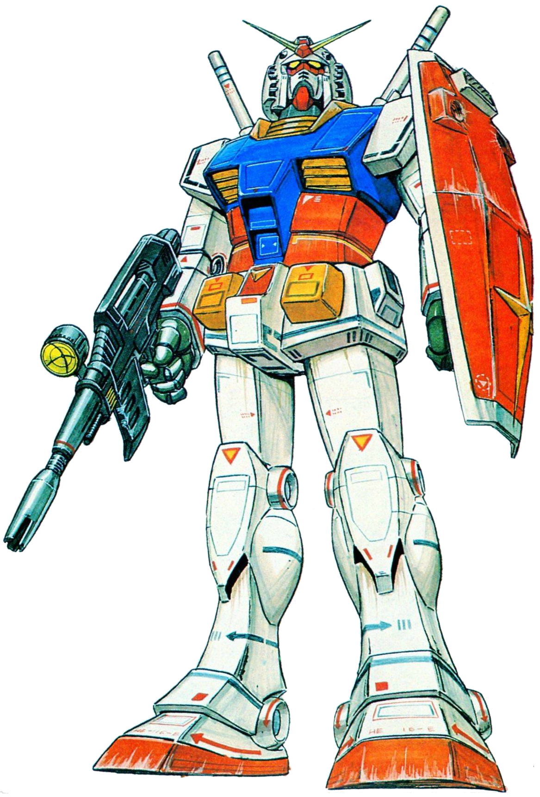

1. 건담 시리즈의 첫 타자인 기동전사 건담의 주역 메카. 모든 건담의 조상격으로 통칭 퍼스트 건담. 처음으로 영상에 등장한 건담으로 이후 나오는 건담들의 기본적인 디자인인 건담 헤드, 백색의 주색과 트리콜로 컬러[1]로 구성된 건담 특유의 도색, 18m 높이의 인간형 병기[2]라는 외형을 통해 건담이라는 기체의 디자인을 최초로 정립한 기체. 모든 건담들의 원조다.
작품 내적으로 봐도 우주세기 작품에서 등장한 모든 건담들의 오리지널이라고 볼 수 있는데, 1년전쟁 이후 연방이 건담 개발 계획이나 건담 Mk-II등 건담 계열 MS들을 만든 것은 뉴타입이 조종해서 전과를 세우며 하얀 악마라고 까지 불리며 전설이 된 RX-78-2가 가진 상징성을 이용하고, 또한 건담으로 달성했던 전과도 재현하고자 하는 목적이 있었기 때문이었다.
비슷한 이유에서 Z건담도 RX계열이 아니지만 '건담'의 이름을 달았으며, 훗날의 건담 F91도 원래는 그냥 'F91'이라는 형식번호만 있었지만 "그러고보니 옛날에 '건담'이라는 MS하고 닮았네...그럼 '건담 F91'이라고 하자."라고 해서 건담이라고 불린 것이고, 빅토리 건담은 연방 출생이 아닌데도 건담이라는 이름의 상징성을 이용하기 위해 건담의 이름을 붙이기도 했다. 물론 건담을 상대하는 측에게는 그야말로 악마라고 해도 이상하지 않을 정도로 두려운 상대였다. 그리프스 전역 때 릭 디아스에 '감마 건담'이라는 코드네임이 붙을 뻔 했지만 크와트로 바지나가 반대하면서 '건담한테 실례'라는 이유를 대기도 했지만 '스페이스 노이드들을 자극할 우려가 있다.'고 한 것에도 그러한 이유가 있었던 것이다.
2. 본디 건담이란 명칭 자체가 이 기체의 이름이었으나, 건담 시리즈가 비대해진 결과 셀 수도 없을 정도로 많은 건담이 등장해서 이젠 단순히 건담이라 부르는 것만으로는 어떤 기체를 칭하는지 알기 힘들어졌고, 첫 번째 건담이라는 의미에서 보통은 퍼스트 건담, 혹은 약칭인 퍼건이나 퍼스트등으로 불리며 이 세 별명이 이 기체의 가장 대표적인 애칭이다. 아예 형식번호인 RX-78-2로 부르는 사람도 있지만, 영어를 쓰기 귀찮아서인지 드물다. 건프라로도 매우 많은 수가 출시되어 있고, 그 바리에이션마다의 애칭도 붙여져 있는 실정이라 사실상 애니메이션 쪽이나 건프라 쪽이나 부르는 사람마다 호칭이 제각각이다. 하지만 애초부터 원래 건담이란 이 기체의 이름이었으니만큼 역시 다른 잡다한 수식어 붙이지 않고 순수하게 건담이라고 칭하면 이 기체이고, 그에따라 다른 기체는 XX 건담이나 건담 XX라고 부르지만 이 기체만큼은 그냥 '건담', 혹은 형식번호까지 'RX-78-2 건담'이라고 부르는 사람도 소수나마 있다.